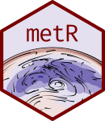

Many useful functions and extensions for dealing with meteorological data in the tidy data framework. Extends 'ggplot2' for better plotting of scalar and vector fields and provides commonly used analysis methods in the atmospheric sciences.
Conceptually it's divided into visualization tools and data tools. The former are geoms, stats and scales that help with plotting using ggplot2, such as stat_contour_fill or scale_y_level, while the later are functions for common data processing tools in the atmospheric sciences, such as Derivate or EOF; these are implemented to work in the data.table paradigm, but also work with regular data frames.
To get started, check the vignettes:
Visualization Tools: vignette("Visualization-tools", package = "metR")
Working with Data: vignette("Working-with-data", package = "metR")
Useful links:
Maintainer: Elio Campitelli elio.campitelli@cima.fcen.uba.ar (ORCID)